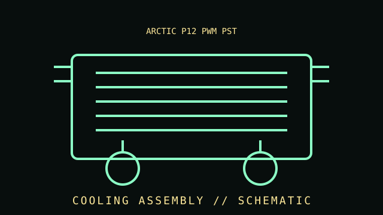

[ INDIVIDUAL COMPONENT // COOLING ]
ARCTIC P12 PWM PST
Four-pin PWM fan with PST daisy-chain wiring for connecting multiple compatible fans to a shared control header. 120 mm pressure-optimized PWM case/radiator fan.

IDENTIFICATION WARNING: Match the complete model, variant, revision, socket kit, and region to the product label and manufacturer manual. Do not assume the specifications apply to similarly named versions.
Specifications
| Catalog subcategory | Case and radiator fans |
|---|---|
| Catalog identity | ARCTIC P12 PWM PST |
| Era / family | 120 mm pressure-optimized PWM case/radiator fan. |
| Frame | 120 × 120 × 25 mm standard axial fan format; confirm case or radiator clearance and screw pattern. |
| Speed range | Manufacturer-listed 200–1800 rpm control range for the documented P12 PWM PST model; actual speed depends on PWM signal and host. |
| Electrical interface | Four-pin PWM input with PST pass-through connector; observe the motherboard/controller header current limit before chaining fans. |
| Acoustic and airflow behavior | Pressure-optimized blade/frame design for restricted airflow paths; published sound and airflow figures are test-condition-dependent. |
| Variants | P12 PWM PST, P12 PWM PST A-RGB, P12 Max, and non-PST models differ in lighting, control, bearings, and speed range; check the full SKU. |
Compatibility, installation & service
- Confirm the exact socket kit, case clearance, board layout, mounting orientation, and manufacturer compatibility list before installation.
- Connect fans and pumps using the documented pinout and control cable; remain within the motherboard or controller header's electrical limits.
- Check fan direction, cooler contact, tubing or cable clearance, and temperature response at first startup.
- Do not open sealed liquid-cooling assemblies or continue operation after suspected leaks, abnormal pump noise, or loss of cooling.
Model-specific notes
PST allows fan power/control wiring to be chained, but it does not raise the motherboard header's electrical limit. Confirm the combined current draw against the board or controller manual. Keep the fan clear of cables, and use case/radiator dimensions rather than the 120 mm label alone to determine fit.
Sources & further reading
- ARCTIC — P12 PWM PST product specificationsManufacturer product page; verify the full product number and regional revision.
- ARCTIC — Product support and technical documentationManufacturer compatibility, support, or installation reference; model-specific documentation takes precedence.
Published thermal and acoustic performance depends on test setup, processor, case, fan control, and ambient conditions.